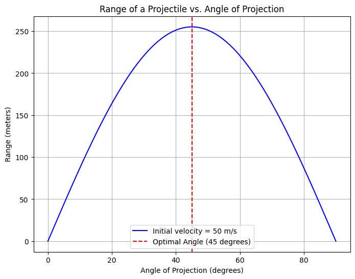

Problem 1
1. Theoretical Foundation: Governing Equations of Projectile Motion
Projectile motion is a type of motion experienced by an object or particle that is thrown into the air, subject only to the force of gravity (neglecting air resistance). The object follows a curved path, and the goal is to analyze how the range (distance traveled horizontally) of a projectile depends on its initial velocity and the angle of projection.
1.1. Fundamental Principles
Projectile motion can be analyzed using Newton's second law, which gives the equations of motion for an object under constant acceleration. In the case of projectile motion, we assume: - Constant acceleration due to gravity: The only force acting on the object (after it has been launched) is gravity, which causes a constant downward acceleration of \(g = 9.8 \, \text{m/s}^2\) near the Earth's surface. - No air resistance: We assume that air resistance is negligible, which simplifies the problem to one involving only vertical and horizontal motions.
1.2. Equations of Motion
For simplicity, we analyze the motion in two dimensions: horizontal (x) and vertical (y).
1.2.1. Horizontal Motion
The horizontal motion is governed by Newton’s first law, as there are no horizontal forces (since air resistance is neglected). Thus, the horizontal velocity remains constant.
Where: - \(v_0\) is the initial velocity of the projectile, - \(\theta\) is the angle of projection, - \(v_x\) is the horizontal velocity.
The horizontal position \(x(t)\) at time \(t\) is given by:
1.2.2. Vertical Motion
The vertical motion is governed by the acceleration due to gravity. The equation for the vertical velocity \(v_y\) at time \(t\) is:
Where: - \(v_0 \cdot \sin(\theta)\) is the initial vertical velocity, - \(g\) is the acceleration due to gravity (\(9.8 \, \text{m/s}^2\)).
The vertical position \(y(t)\) is:
1.2.3. Time of Flight
The time of flight \(T\) is the total time the projectile is in the air. This occurs when the vertical position \(y(t)\) becomes zero (i.e., when the projectile hits the ground):
Solving for \(T\):
1.2.4. Range
The range \(R\) is the horizontal distance the projectile travels before returning to the ground. This is found by substituting the time of flight \(T\) into the horizontal displacement equation:
Substituting the expression for \(T\):
This is the general solution for the range of a projectile, which shows how the range depends on the initial velocity \(v_0\) and the angle of projection \(\theta\).
1.3. Family of Solutions
The equation for the range of a projectile, \(R = \frac{v_0^2 \cdot \sin(2\theta)}{g}\), illustrates how variations in the initial conditions lead to a family of solutions.
-
Initial Velocity (\(v_0\)): The range is proportional to the square of the initial velocity. Doubling the initial velocity will quadruple the range.
-
Launch Angle (\(\theta\)): The sine function, \(\sin(2\theta)\), causes the range to depend on the launch angle. The range is maximized when \(\theta = 45^\circ\) because \(\sin(90^\circ) = 1\). For angles less than \(45^\circ\), the range decreases. Similarly, for angles greater than \(45^\circ\), the range also decreases due to the symmetry of the sine function.
-
Gravitational Acceleration (\(g\)): The range is inversely proportional to \(g\). In locations with lower gravitational acceleration (e.g., on the Moon), the range would be greater.
1.4. Graphical Representation
Let’s now create a graph to visualize how the range varies with the angle of projection for different initial velocities.
